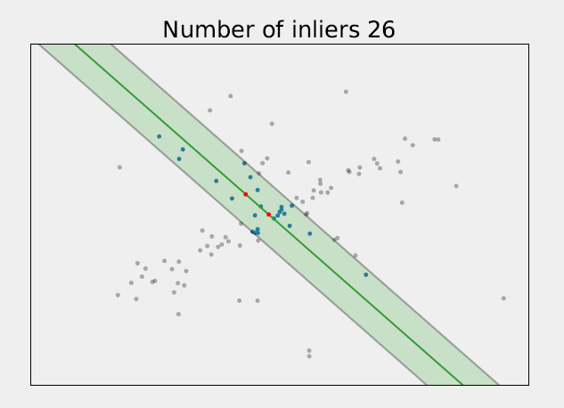

ComputerVision02504
Syntax for writing markdown: ashki23
Export markdown file to HTML: Markdown+Math VSCode extension
Topics Covered
Miscellaneous Notes
Scale
Scale-invariant: functionally equivalent after scalar multiplication (deals with homogeneous coordinates)
- Homography matrix, H
- Essential matrix, E
- Fundamental matrix, F
- Tip: if the matrix is multiplied by a homogeneous coordinate, it is scale-invariant
Scale-variant
- Projection matrix, P
- Rotation matrix, R
- Camera instrinsics, K
- Translation vector, t
Degree of Freedoms (DoF)
- Essential matrix, E: 5, requires ≥ 5 pairs of 2D points correspondence
- Fundamental matrix, F: 7, requires ≥ 7 pairs of 2D points correspondence
- Triangulation: 3 ?
- Homography, H: 8, requires 4 pairs of points
- Perspective-n-Point (PnP): 3, requires ≥ 3 correspondences
Week 1: Pinhole and Homogeneous
Back to top
Pinhole camera

-
In pixel coordinates, (0,0) is usually in the upper left corner of the image
-
δx,δy is used to translate (0,0) from principal point to the upper left corner.
-
px=PzfPx+δx
-
py=PzfPy+δy
-
ph=KP=⎣⎡f00βfαf0δxδy1⎦⎤P
-
Camera extrinsics: rotation R and translation t
-
Projection matrix (3x4), P: ph=PPh=K[Rt]Ph
- ph: homogeneous 2D point, 3x1
- Ph: homogeneous 3D point, 4x1
Homogeneous coordinates
- Euclidean/rigid transformation, P1=RP0+t
- ⎣⎡1231⎦⎤ and ⎣⎡2462⎦⎤ are the same point in homogeneous coordinates
- Homogeneous tranformation, T=[R0t1] (4x4)
- Π( ): converts from homo to inhomo coordinates
- Π−1( ): converts from inhomo to homo coordinates
Homogeneous Lines
0=ax+by+c=⎣⎡abc⎦⎤T⎣⎡sxsys⎦⎤=lTph
- If a2+b2=1 and s=1, then d=lTph, where d is the signed distance from the point to the line.
- lTph=0 means the point lies on the line
- l1×l2=qh cross-product gives the intersection point of 2 lines
Week 2: Camera Model and Homography
Back to top
Camera Intrinsics
K=⎣⎡f00βfαf0δxδy1⎦⎤
- focal length f: pixel distance from pinhole to image plane, performs scaling to make the projected point into pixel coordinates
- principal point δx δy: translates to make (0,0) correct
- skew parameters α β: to correct for non-square pixels and non-rectangular pixels respectively
- P=K[Rt] has 12 degrees of freedom (DoF): 5 from K, 3 rotation, 3 translation, 1 scale (not useful)
Lens distortion
[xdyd]=dist[xy]=[xy]⋅(1+Δr(x2+y2))
where, Δr(r)=k3r2+k5r4+k7r6+...

- Projection without distortion: p=KΠ−1(Π([Rt]Q))
- Projection with distortion: pd=KΠ−1(dist(Π([Rt]Q)))
- Undistortion
- use dist(⋅),K,p to find pd
- use bilinear interpolation to compute RGB at point pd
- inverting dist(⋅) is not needed, but can be done iteratively
Homography, q1=Hq2
- establish pixel correspondence between 2 cameras viewing the same plane
- scale invariant
- 8 DoF: requires 4 pairs of points to estimate H, each pair imposes constraints on x and y
- q1=H1Q,q2=H2Q
- q1=H1H2−1q2=Hq2
Homography Estimation
q1i00=Hq2i=q1i×Hq2i=B(i)flatten(HT)
- where B(i) is a 3x9 matrix built from the x-y coordinates of the pair of points.
- Solve for H using SVD s.t.∣∣B∣∣2=1
Point Normalization
- mean 0, standard deviation 1
- pi=σp~i+μ
- q~i=Tqi, where q is homogeneous
- qi=T−1q~i=⎣⎡σx000σy0μxμy1⎦⎤q~i
- Invert T−1 to get T
- Estimate homography H~ using normalized points, and obtain the homography H that operates on the original points
- q1i=T1−1H~T2q2i=Hq2i
Week 3: Multiview Geometry
Back to top
Projections
- 3D point projects to a 2D point on a camera frame
- 3D line projects to a 2D line, except if the line is parallel to the projection line
- 3D plane projects to a 2D plane, except if the plane is parallel to the projection line
Epipolar line
- A point seen in camera 1 lies along a specific 3D line
- That 3D line projects into a 2D line in camera 2 → epipolar line from q1 to Q
- A point seen in camera 1 must lie along the epipolar line of camera 2
- All epipolar lines intersect at the epipoles
- Epipolar line in camera 2: l2=Fp1
- Epipolar line in camera 1: l1T=q2TF
Essential Matrix, E=[t]×R
- Used to relate the normal of the epipolar plane given by a 3D point
- qi: 2D point from {cam_i} in pixels
- p1: 3D point from {cam1}
- p2: correspoding 3D point from {cam2}
- q=Kp
- p=K−1q
Vectors in the figure are in {cam2}. R,t maps {cam1} wrt {cam2}
- n=[t]×Rp1=Ep1
- 0=p2Tn=p2TEp1
Fundamental Matrix, F=K2−TEK1−1
p2TEp1(K2−1q2)TE(K1−1q1)q2TK2−TEK1−1q1=0=0=0
- Epipolar line in camera 2: l2=Fp1
- Epipolar line in camera 1: l1T=q2TF
- Essential (3D) and Fundamentral matrices (2D) form requirements for pixel correspondence
p2TEp1q2TFq1=0=0
Triangulation
- Solving for the 3D point based on observation of the same point in many known cameras
qi=⎣⎡sixisiyisi⎦⎤=PiQ(pi(3)Q)[xiyi]0=⎣⎡pi(1)Qpi(2)Qpi(3)Q⎦⎤=[pi(1)Qpi(2)Q]=[pi(3)xi−pi(1)pi(3)yi−pi(2)]Q=B(i)Q
- use SVD to find Qargmin∣∣BQ∣∣2,s.t.∣∣Q∣∣2=1
- In this linear algorithm, the error is larger for cameras that are further from Q due to the si term.
Week 4: Camera Calibration
Back to top
qi0=PQi=qi×PQi=B(i)flatten(PT)
- where B(1) is a 3x12 matrix
- solve for B using SVD
Zhang's method for linear calibration
- assume checkboard corners are at z=0, simplifies the projection equation
qijHi=[hi(1)hi(2)hi(3)]hi(1)TK−TK−1hi2hi(1)TK−TK−1hi1=hi(2)TK−TK−1hi2=HiQ~j=λK[ri(1)ri(2)ti]=0=λi2
- A single homography only fixes 2 DoF of a camera matrix.
- Rewriting the constraints into a matrix form,
Vb=⎣⎡vi12vi11−vi22...⎦⎤b=0
where
viαβbbB=hiαTBhiβ=[B11B12B22B13B23B33]=K−TK−1
- viαβ can be evaluated to a 1x6 vector.
- Solve Vb=0 for b using SVD. Then, use formulas from Zhang's paper to find K.
- To find Ri,ti,
λiri(1)ri(2)ri(3)ti=∣∣K−1hi(1)∣∣2=λi1K−1hi(1)=λi1K−1hi(2)=ri(1)×ri(2)=λi1K−1hi(3)
- Refer to slides handwritten notes or slides for more derivation equations.
Reprojection Error
- Compute root mean squared error RMSE
- RMSE=n1∑i∑j∣∣Π(q~ij)−Π(qij)∣∣22
- where q~ij is reprojected using the found K,Ri,ti
Practical considertaions
- Theoretically, at least 3 images are needed for calibration.
- Rotate the checkboards across the images
- Place the checkerboard at all positions around the camera frame
- Have the checkerboard take up more area of the camera frame
Week 5: Nonlinear and Calibration
Back to top
The exercises do not really cover Levenberg-Marquardt, gradients and rotations.
Least-squares problem
xmine(x)=xmin∣∣g(x)−y∣∣22e(x)=f(x)Tf(x)
Levenberg-Marquardt
- least squares problem with 2nd order approximation using only 1st order derivatives
- Jacobian, J: contains all 1st order derivatives of f at xk
- e~ is a 2nd order approx of e using only 1st order derivatives
- Find optimum by setting derivative equal to zero
2JTf(xk)+2JTJδ=0JTJδ=−JTf(xk)
- solve for δ, set xk+1=xk+δ
- Use gradient descent to get closer to the minimum
Gradients: analytical or finite differences (Taylor series)
-
Analytical gradients: + accurate, + fast computation, - complicated
-
Finite differences using Taylor series
- 1st order, forward differences: dxdf(x)=hf(x+h)−f(x)+O(h)
- 2nd order, central differences: dxdf(x)=2hf(x+h)−f(x−h)+O(h2), more accurate & computation
- h is chosen as a fixed percentage of x
Rotations in Optimization
- Euler angles: 3 numbers, one for each axis, prone to gimbal lock
- Axis angles: rotation θ about axis v, store as 3 elements with v∗θ, singularity at 0
- Quaternions: 4 numbers with q12+q22+q32+q42=1, requires normalization at each step
Camera Calibration (advanced issues)
- ChArUco boards
- Subpixel corner estimation
- Be mindful of over-fitting, cross-validation
Week 6: Simple Features
Back to top
Problems with image correspondence
- Scale, rotation, translation → appearance changes depending on distance and pose of camera
- Other issues: occlusion, lighting intensity, lighting diretion, clutter
- Key points/interest points/feature points: coordinate position of points in an image
- Descriptors: characterizes pattern around a point (usually a vector)
Convolution
- Synonymous with filtering.
- Is commutative Ig=g∗I=I∗g
- Is separable Ig=(g∗gT)∗I=g∗(gT∗I)
- Size of Gaussian filter
- Uses an empiric rule of 3σ or 5σ
- size = 2⋅rule⋅σ+1
- e.g. 5-rule, σ=2, size =2⋅5⋅2+1=21

Derivative of Gaussian
gd(x)=dxdg(x)=σ2−xg(x)
Derivative of blurred image Ib in the x-direction is
∂x∂Ib=∂x∂(g∗gT∗I)=g∗(∂x∂gT)∗I=g∗gdT∗I

Harris Corners
- points with locally maximum change from a small shift
- invariant to rotation
- a local area where ΔI(x,y,Δx,Δy)2 is large no matter Δx,Δy
ΔI(x,y,Δx,Δy)=I(x,y,)−I(x+Δx,y+Δy)
Harris corner measure
- approximated using Taylor series expansion
- found by 1st order derivatives
c(x,y,ΔxmΔy)=g∗ΔI(x,y,Δx,Δy)=g∗(I(x,y,)−I(x+Δx,y+Δy))2≈g∗([IxIy][ΔxΔy])2=g∗([IxIy][Ix2IxIyIxIyIy2][ΔxΔy])=[IxIy][g∗(Ix2)g∗(IxIy)g∗(IxIy)g∗(Iy2)][ΔxΔy]
Structure tensor
C(x,y)=[g∗(Ix2)g∗(IxIy)g∗(IxIy)g∗(Iy2)]=[accb]
Use eigenvalues λ1,λ2 to find large values of c(x,y,Δx,Δy)
Harris corner metric
r(x,y)=λ1λ2−k(λ1+λ2)2=ab−c2−k(a+b)2
typically k=0.06
- Corners are at points with r(x,y)>τ
- threshold τ is about 0.1⋅max(r(x,y))<τ<0.8⋅max(r(x,y))
- Find local maximum using non-max suppression
Canny Edges
- Metric is the gradient magnitude
m(x,y)=Ix2(x,y)+Iy2(x,y)
- Choose τ1>τ2
- seed: labels edges with a m(x,y)>τ1
- grow: grow edges with a m(x,y)>τ2, label iff new points are next to previously labelled edges
Week 7: Robust Model Fitting
Back to top
Hough Lines
- Vertical lines are undefined in cartesian ⇒ use polar coordinates
- Represent a line with θ,r
- θ is the angle between norm and x-axis
- r is the norm distance of the line from the origin
Hough Transform
- Each point votes for all the possible lines that go through it
- Each point corresponds to a line in Hough space
- Peak in hough space ⇒ line in image
- Find peaks using non-max suppression in a region
- Hough space not practical for more than 3 DoF

Random sample consensus, RANSAC
- Randomly sample minimum number of points needed to fit the model
- e.g. 2 data points for a line
- e.g. 8 corresponding data points for fundamental matrix
- Fit the model to the random samples
- Measure inliers that are close to the model below a threshold → indicates good fit of model
- e.g. euclidean distance for a line
- e.g. sampson distance for fundamental matrix
- Consensus is the number of inliers
- Keep track of best model and best inliers with the highest consensus
- Refit model to all inliers of the best model

RANSAC iterations
- Estimate the upper bound of the number of iterations required to have at least one sample with only inliers
- The estimate is updated while running RANSAC
- ϵ^=1−ms
- s: no. of inliers of best model
- m: total no. of data points
- N^=log((1−(1−ϵ^)n))log(1−p)
- p: probability that at least one of N samples has only inliers, e.g. 0.99
- n: number of data points to fit a single model
- 2 for 2D line
- 4 for homography
- 8 for fundamental matrix (8-point algorithm)
- 5 for essential matrix
- Terminate once there are more than N^ iterations
| Model |
Codimension |
T2 |
| Line |
1 |
3.84σ2 |
| Fundamental Matrix |
1 |
3.84σ2 |
| Essential Matrix |
1 |
3.84σ2 |
| Homography |
2 |
5.99σ2 |
| Camera Matrix |
2 |
5.99σ2 |
Week 8: BLOBs and SIFT features
Back to top
See examples in ex8.ipynb
SIFT
- features localized at interest points, adapted to scale, inavariance to appearance changes
- scale-space blob detection using difference of Gaussians (DoG)
- interest point localization
- orientation assignment
- interest point descriptor
BLOB: binary large object
Hessian matrix
H=[Ixx(x,y)Ixy(x,y)Ixy(x,y)Iyy(x,y)]
- contains 2nd order derivatives of images
- measures curvature
- eigenvalues and eigenvectors are used to measure the direction of most change
- the Laplacian Δ2I is used to estimate the eigenvalues (?)
- the Laplacian is approximated with DoG
Difference of Gaussians (DoG)
DoG=L(x,y,kσ)−L(x,y,σ)
- iteratively blurring already blurred images (efficient)
- scale invariance: allows features to be detected at different scales
- kernel size increase with each iteration
- the same threshold can be applied for all scale spaces
- find local extrama of DoGs in scale space
- use absolute to find min & max simultaneously
Orientation assignment
- compute orientation of gradient around BLOB
- compute circular histogram of gradient orientations
- use histogram peak to assign orientation of point
Matching descriptors
- Use Euclidean distance between normalized vectors
- Cross checking: keep matches that are closest to each other
- Ratio test: compute ratio betwen closest and 2nd closest match, keep if it is below threshold e.g. 0.7
Variations
- RootSIFT: Hellinger kernel
- SURF, ORB, BRIEF, BRISK
Week 9: Geometry Constrained Feature Matching
Back to top
Fundamentral and Essential Matrix
EF0=[t]xR=K2−TEK1−1=q2TFq1
Estimate F by solving 0=B(i)flatten(F) using SVD, where:
B(i)flatten(F)=[x1ix2i y1ix2i x2i x1iy2i y1iy2i y2i x1i y1i 1]=[F11 F12 F13 F21 F22 F23 F31 F32 F33]T
F has 9 DoF, scale invariant
⇒ 8 data points is sufficient
⇒ 8 pairs of corresponding points
It is also possible to estimate using 7 points.
q2iTFq1i is the distance from the epipolar lines.
Use Sampson's distance to measure distance from model.
dSamp(F,q1i,q2i)=(q2iTF)12+(q2iTF)22+(Fq1i)12+(Fq1i)22(q2iTFq1i)2
Threshold for RANSAC
- Assume each sample has error with m-dimensional normal distribution
- Choose a confidence level e.g. 95%
- Look up CDF for χm2 distribution
RANSAC Workflow
- Find features in both images using SIFT
- Match features using brute force matcher (e.g. 1000 matches)
- Sample 8 of these matching features (8 points from image 1, 8 points from image 2)
- Estimate fundamental matrix using SVD
- Compute sampson distance to estimated F for all matches
- Classify matches as inliers if distance < threshold
- Repeat for fixed number of iterations
- Refit fundamental matrix on set of best inliers

Week 10: Image Stitching
Back to top
Panoramas
- When the camera rotates without translation, there are no perspective deformations
- Assume the world is flat → equivalent to look at a flad 2D world image
Measuring the error of a match: determine if a pair of points are inliners with respect to a homography.
q1~=q1+ϵ1,q2~=q2+ϵ2p1~=Π−1(q1~),p2~=Π−1(q2~)
A possible error could be ∣∣q1~−Π(HΠ−1(q2))∣∣22+∣∣q2~−q2∣∣22, but this does not work because q2 is unknown
Instead use the following approximation:
distapprox2=∣∣q1~−Π(Hp2~)∣∣22+∣∣q2~−Π(H−1p1~)∣∣22
Transforming & warping images
- generate all x,y coordinates for all pixels in reference image
- map these to other image using homography
- use bilinear interpolation to compute values at the transformed pixel locations
- warp only valid parts of each image
Compositing images
- averge, overlap, median, graph cut
Week 11: Visual Odometry
Back to top
Visual odometry, structure from motion (SfM), simulataneous localization and mapping (SLAM)
Estimating E
- E has 5 DoF: 3 rotations, 2 translations.
- solved using Nister's 5-point algorithm in OpenCV
- E can be computed from R and t, but there are 2 possible rotations and the sign of translation is unknown
- choose the pose with the most points in front of both cameras
- To find the pose of a 3rd camera,
- use translation between the first 2 cameras to fix the scale
- triangulate points using the first 2 cameras
- use 3D points to find pose of the 3rd camera
Perspective-n-Point
- estimating the pose of a calibrated camera from n corresponding 3D-2D correspondences
- 3 correspondences are required (minimal case of P3P)
- 3 2D points give 3 pairwise angles, distances between 3 3D points give 3 pairwise distances
- 4th correspondence is used to choose the correct solution from 4 possible solutions
- orientation of camera: RT
- position of camera: −RTt
Outline
- Use E or F matrix to estimate pose of the 2nd camera
- Triangulate points using the known camera poses
- Use PnP to estimate pose of the next camera
- Repeat steps 2 and 3
Week 13: Structured Light
Back to top
Laser line scanning
- detect laser line in each image, triangulate, repeat
- slow method due to one triangulation line per image
Encoding surfaces
- For each pixel in the camera, identify the code/color
- For each code/code border, identify the corresponding light plane
- Triangulate using pixel rays and the "laser plane"
Binary encoding

- discrete encoding scheme: only 3D points at code-borders
- frame + inverted frame improves robustness against ambient light and varying object color
- N frames /rarr 2N unique regions, 2N−1 unique borders
- With 1920 pixels wide, N≤log2(W)≈10.9. Max of 20 frames in total with inverted frames.
- suffers from the border problems where a single bit change great changes the code
N≤log2(W)
Gray code encoding
- discrete encoding scheme: only 3D points at code-borders
- overcomes border problems of binary encoding
- only 1 bit flip at code borders, with same number of frames as binary patterns
Phase shift encoding

- continuous encoding scheme: 3D point for each pixel in the camera
- each point has a unique phase-plane (θ)
- monochrome pattern is good for color objects
- the projector shoots a light intensity of I(x,y)=21+21cos(n⋅θ(x))
Workflow
- phase shift exactly one wavelength in s steps
- use fast Fourier transform to fit a sinusoid and find n⋅θ for a single picel
- the 2nd element of the FFT is a complex number with θ=angle(FFT2)
Phase wrapping
- the measured phase differs from the expected phase because the phases are wrapped to between 0 and 2π
- unwrapping is done using Heterodyne principle
Heterodyne principle
- a smart way to recover θ by subtracting the secondary phase from the primary phase
- project 2 patterns: primary pattern (period n1) and secondary pattern (period n2), such that n2=n1+1
- phase cue, θc=mod(θ2(x)−θ1(x),2π) (linear in errors of θ1 and θ2)
- to make θestimate more robust to noise, using order and rounding
- o1=⌊2πn1⋅θc−θ1⌉ (round to nearest integer)
- θest=n12πo1+θ1mod2π (error of n1ϵ1)

Final notes
- instead of projector plane triangulation, epipolar lines in the cameras can be used
- provided that the project planes are not parallel with the epipolar planes
- rectifying: virtually make cameras parallel to each other, so that epipolar lines are corresponding rows